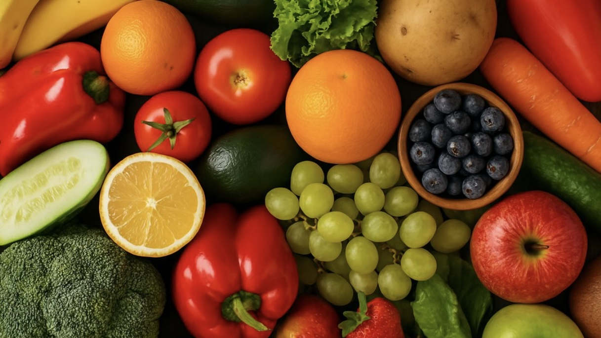

Solução Natural Para Apoiar o Controle do HIV/SIDA

Ingredientes:
- 🍋 2 limões médios, frescos e suculentos
- 🫚 1 pedaço de gengibre (cerca de 5cm), limpo e fresco
- 🍯 1 colher de mel puro, preferencialmente natural
- 💧 500ml de água morna (não quente demais, cerca de 40–45°C)
Modo de preparo passo a passo:
- Esprema os limões: Corte os limões ao meio e esprema o suco, retirando as sementes para não amargar.
- Rale o gengibre: Use um ralador fino para extrair o gengibre, aproximadamente 1 colher de chá rasa, para liberar aroma e propriedades.
- Prepare a água morna: Aqueça a água até ficar morninha, entre 40 a 45 graus Celsius — água muito quente pode perder algumas propriedades do mel e do gengibre.
- Misture tudo: Em uma caneca ou chavina, junte o suco do limão, o gengibre ralado e a colher de mel. Mexa bem até o mel dissolver completamente.
- Consuma com calma: Tome esta bebida preferencialmente em jejum, pela manhã. Pode tomar uma ou duas chavinas por dia, dependendo de como você se sente.
- Repetir: Para melhores resultados, faça essa preparação todos os dias, preferencialmente durante 7 dias seguidos, sempre preparando a bebida fresca.
CURAR TOTAL DO HIV/SIDA